ЗIATLAS
Космос всегда был пространством притяжения и неизвестности. Люди с начала времен стремились к его исследованию.
ЗIATLAS - это межзвездный объект, исследование которого стало уникальным случаем в науке. Учёные долгое время не могли точно определить его происхождение. Было предположение, что это космический корабль, но это никто не мог не опровергнуть, не подтвердить.
Астрофизики и астрономы со всего мира проводили исследования этого феномена. Среди них и Вадим Погорелов, специалист по контролю космического мусора.
Мой проект исследует неопределённость, в которой научный факт сталкивается с мистификацией. Таким образом, границы между правдой и вымыслом размываются.
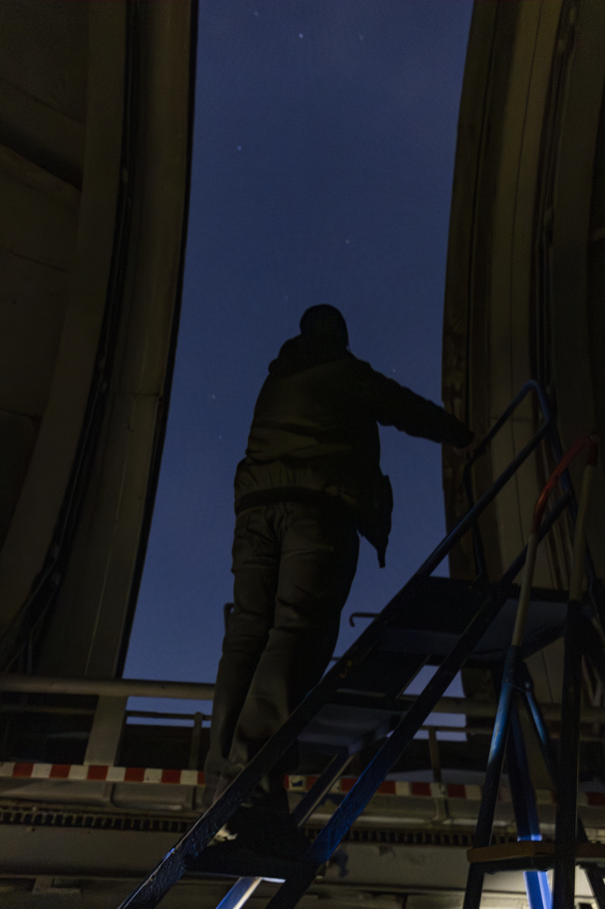
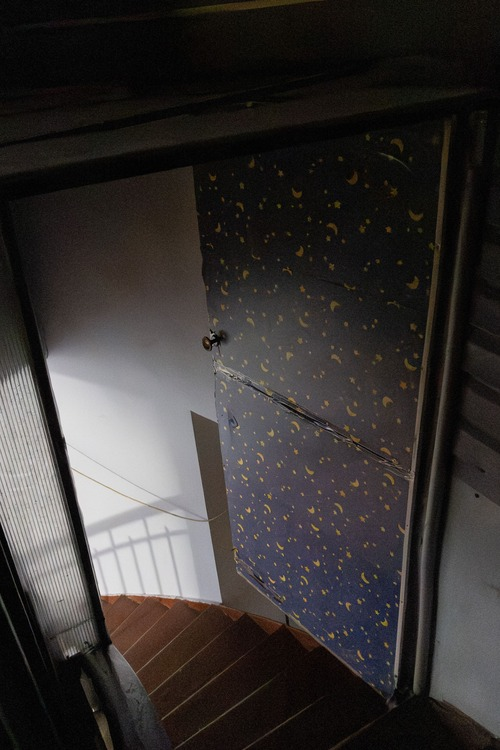
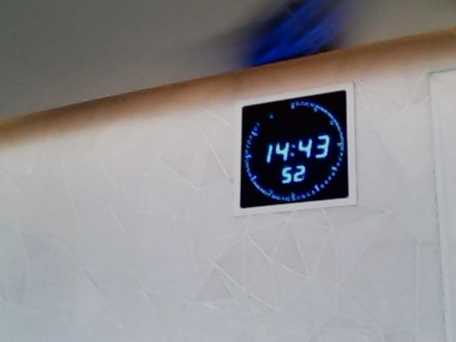
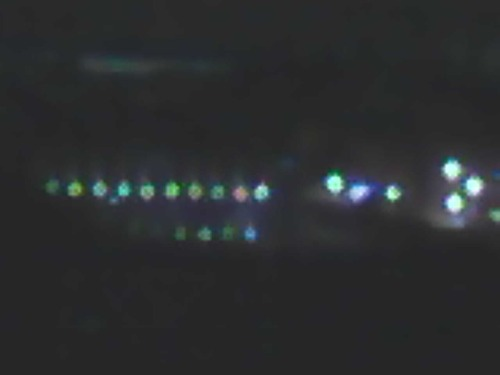
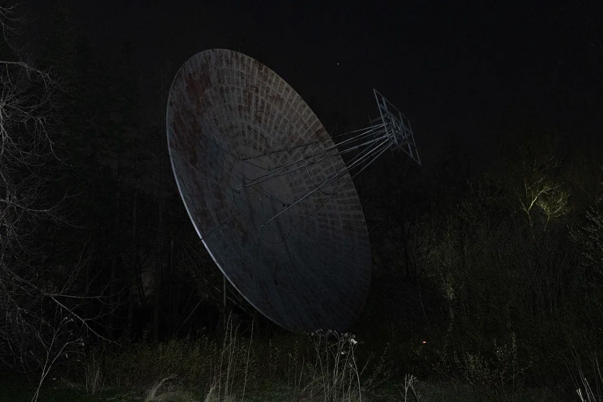
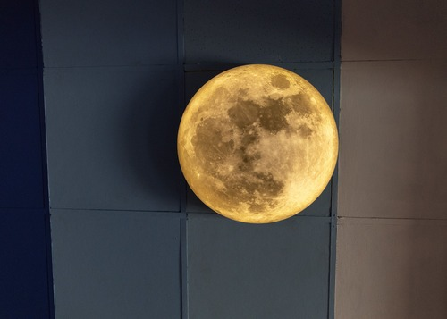
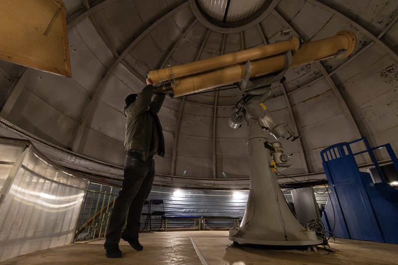
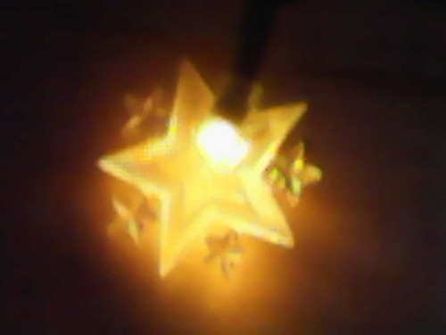
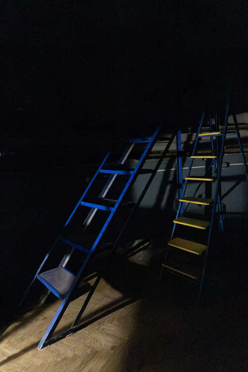
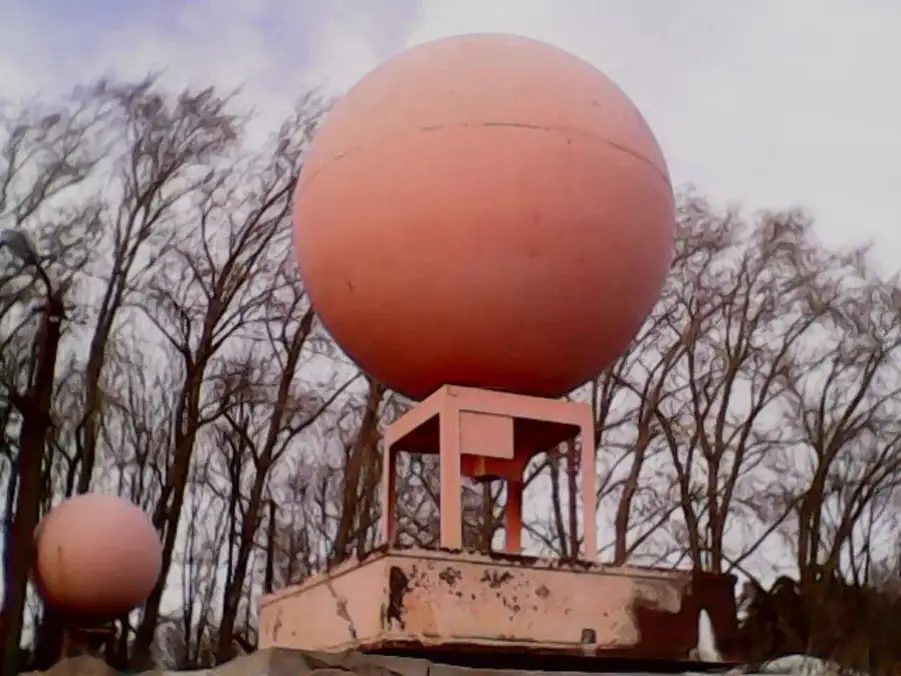
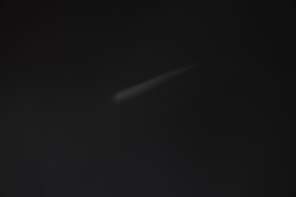
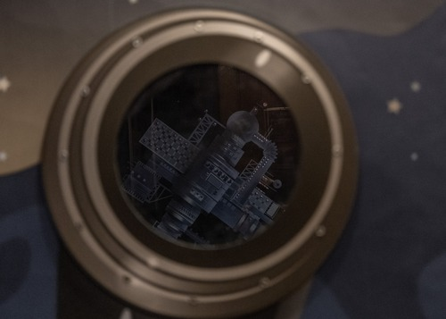
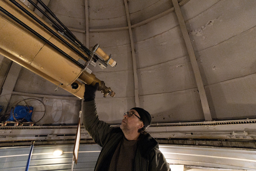
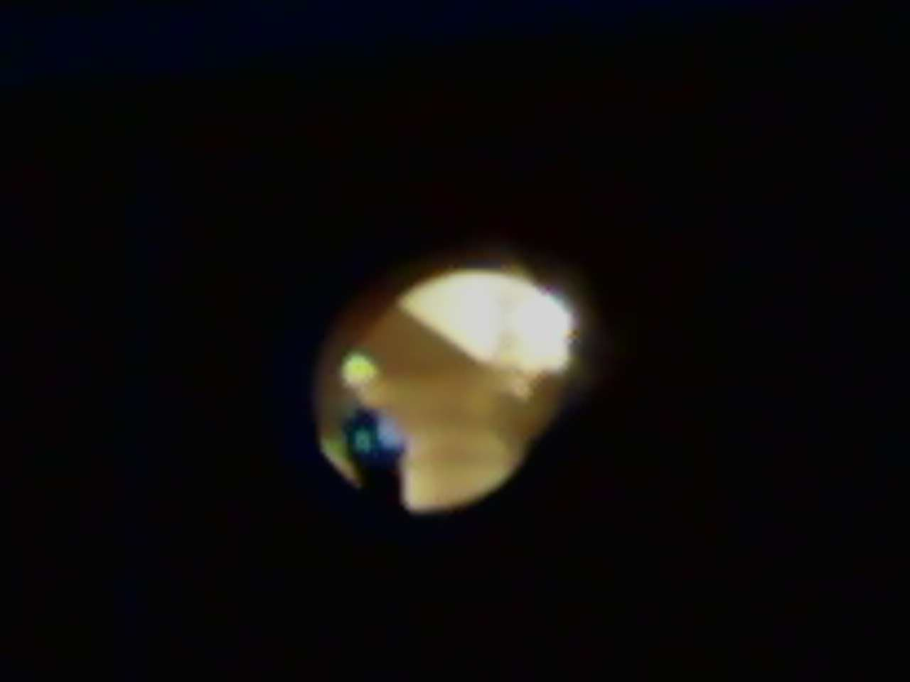
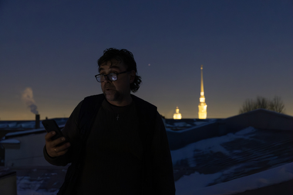
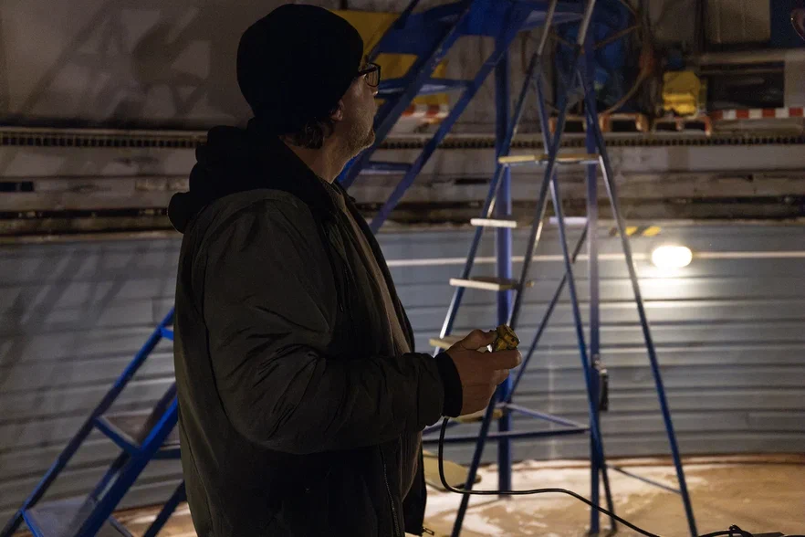
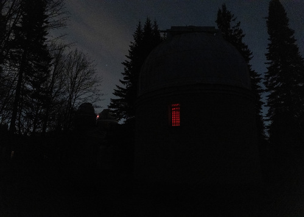
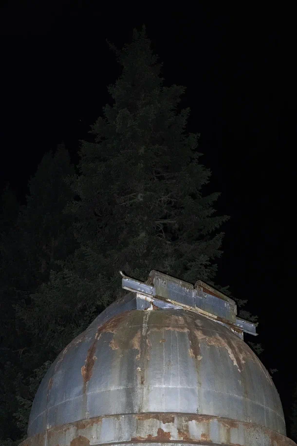
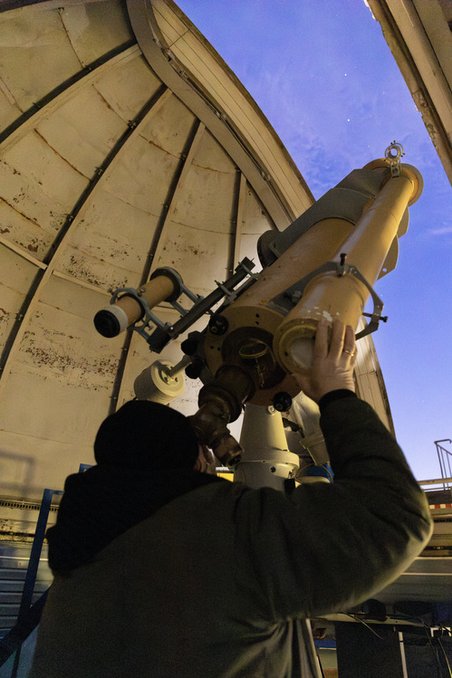
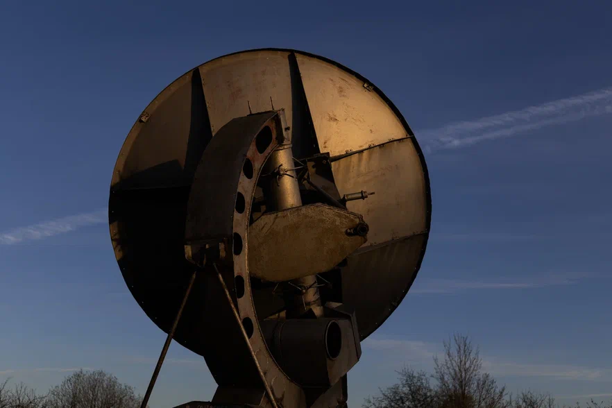
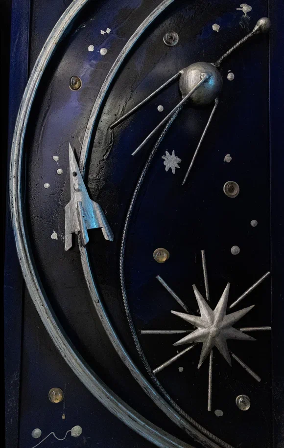
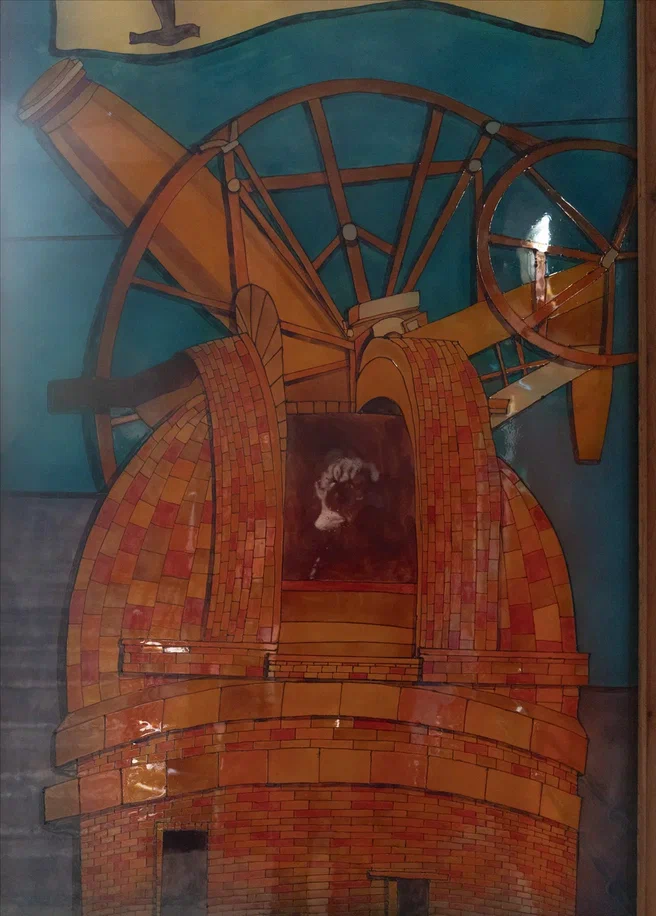
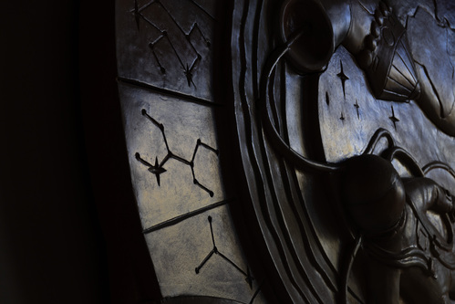
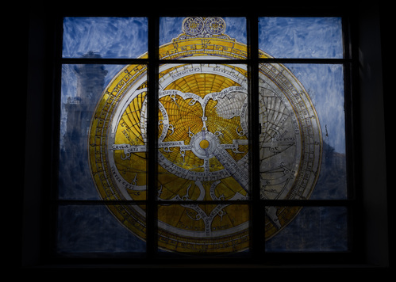